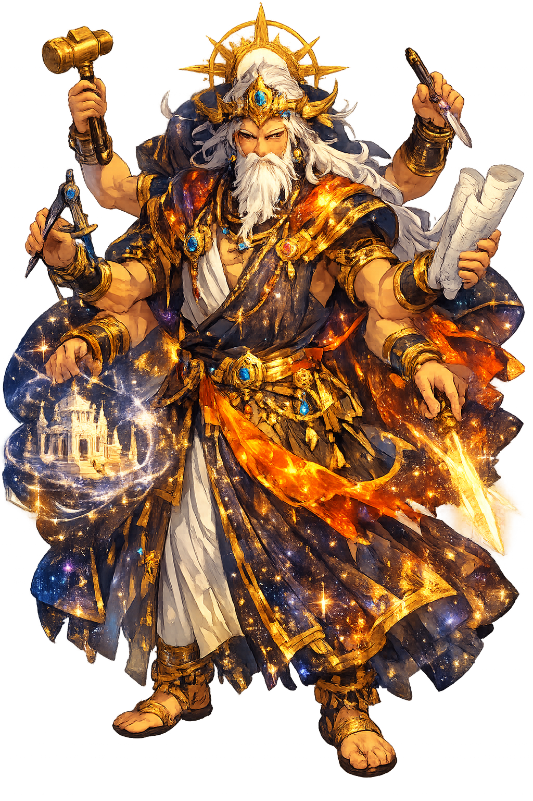

The Authentic Orthography
Craft, Making, Form · 'The Fashioner, the Maker' (from tvaṣ, to form), the divine craftsman

Unicode restoration and ASCII comparison
त्वष्टृ
The name in its original Sanskrit form. Tvaṣṭṛ (त्वष्टृ) is attested in the source tradition — “'The Fashioner, the Maker' (from tvaṣ, to form), the divine craftsman”. Its emphatic consonants and palatal/retroflex sibilants carry the full phonetic and orthographic weight of the source tradition.
tvastr
Reduced to plain tvastr, the name loses everything that made it specific: emphatic consonants and palatal/retroflex sibilants. What remains is an ASCII string that machines can parse but that no longer speaks with its original voice.
Tvaṣṭṛ
The Unicode restoration recovers what ASCII flattened. Tvaṣṭṛ restores emphatic consonants and palatal/retroflex sibilants, returning the name to its original written dignity. The domain encodes to Punycode, but the browser displays the truth.
Tvaṣṭṛ.com → xn--tva-u7ytb8c.com
The non-ASCII characters in Tvaṣṭṛ are encoded while the ASCII remains visible. To the DNS, it is Punycode. To humanity, it is Tvaṣṭṛ.
How Tvaṣṭṛ travels from ancient script to the modern URL
How Tvaṣṭṛ was spoken
The Forge of the Gods, the Vajra, and the Avenging of a Son
Tvaṣṭṛ is the divine smith of the Ṛgveda: maker of Indra's thunderbolt, shaper of the soma cup, fashioner of wombs and forms — and the father whose grief over his slain son produced the greatest monster of Vedic myth.
He forged Indra's thunderbolt — the weapon that split the dragon's fortress.
In grief he shaped the avenger: Vṛtra, born to kill Indra, by the rite gone wrong.
His three-headed son, the gods' priest, slain by Indra — the wound that drove the forge.
He fashioned the very cup from which the gods drink immortality.
Stories of Tvaṣṭṛ
Tvaṣṭṛ's cycle is the Vedic meditation on craft and consequence: the hands that make the weapons, the cups, and the children are the same — and what is made can turn on its maker's world.
When the dragon Vṛtra held the waters captive, Indra needed a weapon worthy of the deed: Tvaṣṭṛ forged the vajra, the bolt that smashed the ninety-nine fortresses and split the dragon's jaw. The Ṛgveda repeats the attribution like a signature — "the bolt that Tvaṣṭṛ made for thee" — the smith's name stamped on the pantheon's supreme weapon.
Tvaṣṭṛ's son Viśvarūpa — three-headed, six-eyed — served as priest of the gods while secretly feeding the anti-gods' share of the offerings. Indra struck off the heads; from them sprang the partridge, the sparrow, and the quail. The smith's grief at his son's death is the hinge of the whole cycle: the forge turns from weapons for the gods to a weapon against them.
Taittirīya Saṃhitā tells the terrible sequel: Tvaṣṭṛ performed a rite to create an avenger — but the accent of the mantra slipped. He meant "slayer of Indra" (indrā-śatru, with the accent of possession); the words came out "Indra-slain" — and Vṛtra, the monster he raised, was doomed by grammar to die by Indra's hand. The smith fashioned the weapon; the language fashioned the outcome.
His daughter Saraṇyū married the Sun and, unable to bear his blaze, left her own shadow-image in her place and fled as a mare. The Sun discovered the substitution, followed as a stallion, and of their union were born the twin Aśvins. Tvaṣṭṛ's household thus generated the gods of healing and dawn — the fashioner's line shaping light itself.
Tvaṣṭṛ is the god of what your hands release. The bolt, the cup, the child, the monster — all leave the bench and live their own lives. His myth's terrible precision is that the rite made the weapon and the word unmade it: craft, he teaches, is only half of making; the other half is the intention the world will read in what you made.
Enter Extended Lore